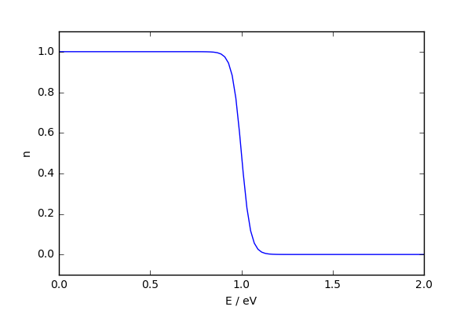
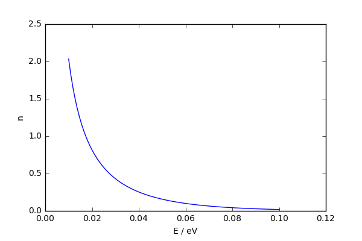

01 - structure of matter¶
Quantum Mechanics¶
We take as a given the time independent form of the Schroedinger wave equation $$ \hat{H} \psi = E \psi $$ We make the Hamiltonian (operator) by taking the classical expression for the Hamiltonian (energy), and substituting $$ x \to \hat{x}, y \to \hat{y}, z \to \hat{z} $$ and for the linear momenta, $$ p_x \to \hat{p_x} = i\hbar \frac{\partial}{\partial x}, p_y \to \hat{p_y} = i\hbar \frac{\partial}{\partial y}, p_z \to \hat{p_z} = i\hbar \frac{\partial}{\partial z} $$ how do we find solutions to the equation?
General matrix formulation¶
We have a Hamiltonian operator $\hat{H}$.
We try to find solutions to the Schroedinger equation of the form
$$ \psi (x) = \sum_i c_i \phi_i (x) $$
where the $\phi_i$ are functions we know - maybe solutions to the atomic problem, for instance, and the $c_i$ are complex coefficients.
We assume the $\phi$ are orthonormal
$$ \int d x \phi_i^* (x) \phi_j (x) = \delta_{ij} $$
We substitute our guess into the time-independent Schroedinger equation
\begin{align*} \hat{H} \psi & = E \psi \\ \hat{H} \sum_j c_j \phi_j & = E \sum_j c_j \phi_j \end{align*}
now we multiply on the left by $\psi^*$ and integrate over all space
\begin{align*} \int d^3x\sum_i c_i^* \phi_i^* \hat{H} \sum_j c_j \phi_j & = E \int d^3x \sum_i c_i^* \phi_i^* \sum_j c_j \phi_j \\ \int d^3x\sum_i \sum_j c_i^* c_j \phi_i^* \hat{H} \phi_j & = E \int d^3x \sum_i \sum_j c_i^* c_j \phi_i^* \phi_j \end{align*}
now, because of orthogonality, we have $\int d^3x \phi_i^* \phi_j = \delta_{ij}$, so we can lose one of the sums and the integral on the right hand side
\begin{align*} \int d^3x \sum_i \sum_j c_i^* c_j \phi_i^* \hat{H} \phi_j & = E \int d^3x \sum_i \sum_j c_i^* c_j \phi_i^* \phi_j \\ & = E \sum_k c_k^* c_k \end{align*}
Variation of parameters ¶
now the trick - we differentiate with respect to $c_i^*$. The only thing that depends upon $c_i^*$ is $c_i^*$ and we dramatically simplify our equations.
\begin{align*} \frac{\partial}{\partial c_i^* } \int d^3x \sum_i \sum_j c_i^* c_j \phi_i^* \hat{H} \phi_j & = \frac{\partial}{\partial c_i^* } E \sum_k c_k^* c_k \\ \int d^3x \sum_j c_j \phi_i^* \hat{H} \phi_j & = E c_i \\ \sum_j \int d^3x \phi_i^* \hat{H} \phi_j c_j & = E c_i \\ \sum_j H_{ij} c_j & = E c_i \\ \implies H C & = E C \end{align*}
Now $H$ is a matrix with elements $H_{ij} = \int d^3x \phi_i^* \hat{H} \phi_j $ and $C$ a column vector with elements $c_i$.
Matrix Mechanics
$$H C = E C$$ Notice that this looks like the Schroedinger equation again - but now we are dealing with matrices and vectors rather than differential equations.
In fact it is quite clearly an eigenvalue problem now, and you can use the techniques you learnt last year to solve for $C$ and $E$.
The $E$ values give us the energy levels of the system - they are then filled according to Fermi-Dirac statistics.
For simple systems, this means filling the levels, from lowest first, until the correct number of electrons are accommodated.
Pauli exclusion principle¶
In 1925 Pauli discovered the exclusion principle - no two electrons can be in the same state.
This changes the 'statistics' and Fermi and Dirac together (at least in name, see Stigler's Law of Eponymy) derived Fermi-Dirac statistics.
Sommerfeld combined Fermi-Dirac statistics with Drude's theory of metals.
Which we'll try and do later
Fermi-Dirac Statistics¶
Given a system of free electrons with chemical potential $\mu$ the probability of an energy level $E$ being occupied is
$$ n_F(\beta(E-\mu)) = \frac{1}{e^{\beta(E-\mu)} +1} $$where $\beta = \frac{1}{k_B T}$ controls how it changes with temperature.
Fermi-Dirac distribution 
"filling the bus"
Bose-Einstein distribution  "more sociable"
Independent electrons ¶
We are assuming that our electrons are independent.
Filling a level does not change the energy of the level or any other level.
The energy of the system is the sum of the energies of the occupied states.
Matrix formulation of Quantum Mechanics¶
what we have just done is the way most real quantum mechanical calculations are done. The Schroedinger wave equation itself is almost never used. Now the coefficients $C$ effectively describe our wavefunction.
Instead we have a matrix fomulation of QM, which is associated with the names Heisenberg and Born.
The matrix form of the Hamiltonian has elements that have the elements of our trial wavefunction sandwiching the operator.
This form of the matrix equation is the same every time, and the full derivation doesn't need to be done, we can just write down the matrix elements in many cases.
Actually, much theoretical work involves building models to explore by assuming forms of the Hamiltonian and values for matrix elements to describe the important physics of a problem.
Summary
We take as a given the time independent form of the Schroedinger equation $$ \hat{H} \psi = E \psi $$ We make the Hamiltonian (operator) by taking the classical expression for the Hamiltonian (energy), and substituting $$ x \to \hat{x}, y \to \hat{y}, z \to \hat{z} $$ and for the linear momenta, $$ p_x = i\hbar \frac{\partial}{\partial x}, p_y = i\hbar \frac{\partial}{\partial y}, p_z = i\hbar \frac{\partial}{\partial z} $$When we have the energy levels, we fill them according to Fermi-Dirac statistics.
Covalent bonding¶
is a quantum mechanical phenomenon, where atoms lower their energy by sharing electrons. We'll see below in a approximation called Molecule Orbital theory, that the reduction in energy primarily comes from a reduction in the kinetic energy of the electrons.
Lets consider a molecule made up of two nuclei and a single electron.

Molecular Orbital, or Tight Binding Theory¶
see Simon section 6.2.2. This is the same, but the notation is a bit different.
To make life simple, lets assume the nuclei are stationary - after all they are > 1000 times heavier than the electron, so they will move incredibly slowly compared to the electron.
Total energy is then the sum of the Electronic part and the nuclear part. $$ E_{\rm{total}}(;\mathbf{R}_{i,j}) = E_{\rm{electronic}}(;\mathbf{R}_{i,j}) + V_{\mathbf{R}_{ij}} $$ The value of the electronic energy will depend parametrically on the distance the nuclei are apart.
Electronic Hamiltonian¶
We write out our classical Hamiltonian $$ H = T + V_1 + V_2 $$
Then to go quantum we replace the classical Hamiltonian with the quantum operators $$ \hat{H} = \hat{T} + \hat{V_1} + \hat{V_2} $$
where $T = \mathbf{p}^2/2m$ is the kinetic energy of the electron and
$$ V_i = \frac{e^2}{4\pi \epsilon_0 |\mathbf{r-R}_i|} $$
is the coulomb interaction between the electron at $\mathbf{r}$ and the $i$th nucleus at which we have fixed at $\mathbf{R}_i$.
We do exactly what we just did for the non-interacting electron gas. We take a trial wavefunction
$$ \psi = c_1 \phi_1 + c_2 \phi_2 $$
and the functions $\phi$ in the trial wavefunction are "atomic" orbitals, that correspond to solutions when the electron is near just one isolated nuclei (i.e. an atom). By this we mean that they satisfy the atomic Schroedinger equations
\begin{align*} (\hat{T} + \hat{V_1})\phi_1 = \epsilon_1 \phi_1\\ (\hat{T} + \hat{V_2})\phi_2 = \epsilon_2 \phi_2 \end{align*}
if the nuclei are the same, then the eigenvalues will be the same, so I'll just use $\epsilon_1$ from now on.
We assume that the $\phi$ are orthogonal $$ \int d^3x \phi_i^* \phi_j = \delta_{ij} $$
now we can build the matrix form of our Hamiltonian
\begin{align*} H_{11} = & \int d^3x \phi_1 \hat{H} \phi_1 = \int d^3x \phi_1 (\hat{T} + \hat{V_1}) \phi_1 + \int d^3x \phi_1 \hat{V_2} \phi_1 = \epsilon_1 + V_{cross}\\ H_{22} = & \int d^3x \phi_2 \hat{H} \phi_2 = \int d^3x \phi_2 (\hat{T} + \hat{V_2}) \phi_2 + \int d^3x \phi_2 \hat{V_1} \phi_2 = \epsilon_2 + V_{cross}\\ H_{12} = & \int d^3x \phi_1 \hat{H} \phi_2 = \int d^3x \phi_1 (\hat{T} + \hat{V_2}) \phi_2 + \int d^3x \phi_1 \hat{V_1} \phi_2 = 0 - t\\ H_{21} = & \int d^3x \phi_2 \hat{H} \phi_1 = \int d^3x \phi_2 (\hat{T} + \hat{V_1}) \phi_1 + \int d^3x \phi_2 \hat{V_2} \phi_1 = 0 - t \end{align*}
where we have used the atomic Schroedinger equations to simplify the equations, and introduced some notation $t$ and $V_{cross}$ for two new types of matrix elements that do not appear in the atomic problem.
Matrix elements
$t$ is called the hopping term, as it lets the electon 'hop' from one orbital to the other.
In a timedependent picture it would give the rate of oscillation between the two orbitals.
It will tend to increase as $\mathbf{R}_{ij}$ decreases, as the orbitals get closer together, so the bonding will become stronger.
$V_{cross}$ is the coulomb energy of an electron occupying the orbital on one the nuclei with the other nuclei.
In matrix form we now have
$$ \left( \begin{array}{cc} \epsilon_1 + V_{cross} - E & -t \\ -t & \epsilon_1 + V_{cross} - E \end{array} \right) \left( \begin{array}{c} c_1 \\ c_2 \end{array} \right) = 0 $$
The determinant of this matrix can be written $(\epsilon_1 + V_{cross} - E)^2 + t^2$ and taking $\pm$ the square roots of the left hand side we get Eigenvalues
$$ E_{\pm} = \epsilon_1 + V_{cross} \pm t $$
and Eigenvectors
$$ \psi_{\pm} = \frac{1}{\sqrt{2}}(\phi_1 \pm \phi_2) $$
Filling the levels¶
just like for atomic systems, where it lead to the periodic table of the elements, we can now feed electrons into the energy levels we have found.
Remember, Pauli's exclusion principle states that no two electrons can share the same spin orbital. This means that two electrons can go into each of the MOs we have found. In particular the bonding orbital can accept two electrons.
Nuclear Hamiltonian¶
really we should indicate that the energies that we get depend on where the nuclei are placed, and a nuclear-nuclear repulsion term should be added.
$$ E_{\pm}(;\mathbf{R}_{i,j}) = \epsilon_1 + V_{cross} \pm t + V_{\mathbf{R}_{ij}} $$
the effective nuclear-nuclear interaction in this case would be coulomb-like at reasonable distances, and tend to cancel the $V_{cross}$ term in the energy.
For atoms with more electrons things are more complicated, there is a coulomb like term with an effective charge (nuclear charge + charge of tightly bound electrons) + a term that arises from the Pauli repulsion of the tightly bound electrons when the charge clouds start to overlap.
As the nuclei get too close (our model will breakdown first) nuclear-nuclear repulsion will grow ~exponentially.
$t$ is called the hopping term, as it lets the electon 'hop' from one orbital to the other (compare the non-interacting electrons when things were diagonal). In a timedependent picture it would give the rate of oscillation between the two orbitals. It will tend to increase as $\mathbf{R}_{ij}$ decreases, as the orbitals get closer together, so the bonding will become stronger.
In fact if you squeeze things enough they will become metallic.

Recent paper describes the observation of metallic hydrogen.
The competition between the nuclear-nuclear repulsion and this hopping term, will lead to a 'binding curve' if we plot $E_{\pm}$ as a function of $\mathbf{R}_{ij}$
A popular approximate form for the shape of the bonding curve is the Morse potential
$$
V(R_{ij}) = V_0 \left[ e^{-2 \kappa (R_{ij}-R_0)} - 2 e^{-\kappa (R_{ij}-R_0)} \right]
$$

where $R_{ij}$ is the distance between nuclei $i$ and $j$
We can put up to two electrons into a binding orbital (though we have to pay an electron-electron repulsion energy).
This gives rise to the simple Molecular orbital picture of why H$_2$ is strongly bound, but He$_2$ is unbound.

|

|
Covalent bonding¶
The molecular orbital picture above gives an approximate description of covalent bonding.
It is the 'hopping' integral, which results in sharing of electron density between atom centred orbitals that causes covalent binding.
This sharing reduces the kinetic energy of the electrons - the binding orbital is more distributed and has no nodes, this makes its curvature, and hence the kinetic energy smaller.
A similar explanation in terms of reduction in kinetic energy can be used to explain why metals are stable.
This picture also explains the bonding in covalent crystals, like Diamond or silicon.
It leads to the tight-binding model of the electronic structure of solids, so understanding this as well as possible is time well spent.
Ionic bonding¶
We can put up to two electrons into a binding orbital (though we have to pay an electron-electron repulsion energy).
If the energy levels of the two atomic orbitals are very different, we get ionic bonding.

We pay the cost of ionising the cation, gain the electron affinity of the anion + ionic interaction energy.
Ionic bonding¶
Actual energetics is more complicated than independent electron picture - we should be penalised for putting two electrons into the same orbital (wavefunction).
Overall we lose energy from putting electrons together, but gain from lower initial energy of state and ionic interaction.
Summary
We take as a given the time independent form of the Schroedinger equation $$ \hat{H} \psi = E \psi $$ We make the Hamiltonian (operator) by taking the classical expression for the Hamiltonian (energy), and substituting $$ x \to \hat{x}, y \to \hat{y}, z \to \hat{z} $$ and for the linear momenta, $$ p_x = i\hbar \frac{\partial}{\partial x}, p_y = i\hbar \frac{\partial}{\partial y}, p_z = i\hbar \frac{\partial}{\partial z} $$When we have the energy levels, we fill them according to Fermi-Dirac statistics.